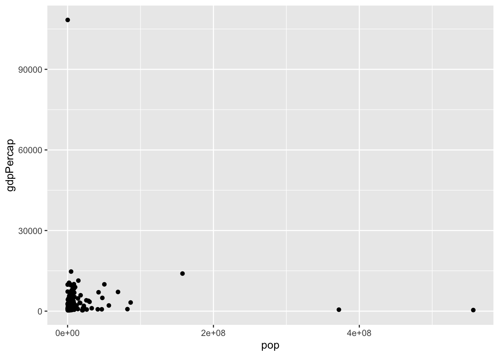
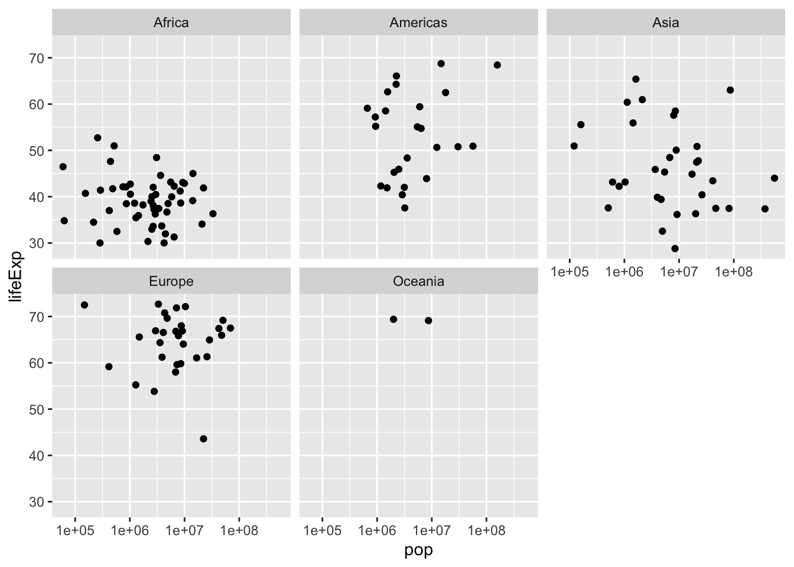

Data visualization
In the previous chapter, you utilized the dplyr package to address inquiries regarding the gapminder dataset. You successfully filtered for specific observations, arranged data to identify extreme values, and utilized mutate to introduce new columns. However, up to this point, you’ve solely interacted with the outcomes in the form of a printed table from your code. Frequently, a more effective approach to comprehend and present such data is through graphical representations.
In this chapter, you’ll delve into the fundamental aspect of data visualization using the ggplot2 package. Specifically, you’ll explore how to generate scatterplots, such as the one depicted here, which facilitate comparison between two variables along x- and y-axes. Visualization and data manipulation frequently go hand in hand, so you’ll discover how the dplyr and ggplot2 packages synergize to craft insightful graphs.
Variable Assignment
Visualizing with ggplot2
Visualizing with ggplot2

Suppose you aim to explore the correlation between a country’s wealth and its life expectancy. This can be achieved through a scatterplot comparing two variables in our gapminder dataset: GDP per capita on the X-axis and life expectancy on the Y-axis. You’ll generate this plot using the ggplot2 package. Similar to the gapminder and dplyr packages, you’ll need to load it with library(ggplot2) first.
library(ggplot2)
ggplot(data = gapminder_2007, aes(x = gdpPercap, y = lifeExp)) +
geom_point()There are three components to a ggplot graph. Firstly, the data that you’re visualizing—here, it’s the gapminder_2007 variable you just created. Secondly, the mapping of variables in your dataset to aesthetics in your graph. An aesthetic represents a visual dimension of a graph that communicates information. In a scatterplot, the X-axis and the Y-axis are the two dimensions, which you specify using aes(x = gdpPercap, y = lifeExp). Lastly, you specify the type of graph you’re creating by adding a layer to the graph using geom_point(). The term “geom” signifies that you’re adding a type of geometric object to the graph, while “point” indicates it’s a scatter plot where each observation corresponds to one point.
Together, these three parts of the code—the data, the aesthetic mapping, and the layer—construct the scatter plot. In the exercises, you’ll practice generating other scatterplots to compare variables across countries. Additionally, throughout the rest of this chapter, you’ll learn more techniques to effectively communicate information through graphs.
Exercise
Exercise: Variable assignment
Throughout the exercises in this chapter, you’ll be visualizing a subset of the gapminder data from the year 1952. First, you’ll have to load the ggplot2 package, and create a gapminder_1952 dataset to visualize.
- Load the ggplot2 package after the gapminder and dplyr packages.
- Filter gapminder for observations from the year 1952, and assign it to a new dataset gapminder_1952 using the assignment operator (<-).
Answer
# Create gapminder_1952
gapminder_1952 = gapminder%>%
filter(year == 1952)
Exercise: Comparing population and GDP per capita
Earlier, you learned to create a scatter plot with GDP per capita on the x-axis and life expectancy on the y-axis (the code for that graph has been provided in the exercise code). When you’re exploring data visually, you’ll often need to try different combinations of variables and aesthetics.
- Change the scatter plot of gapminder_1952 so that (pop) is on the x-axis and GDP per capita (gdpPercap) is on the y-axis.
Answer
gapminder_1952 <- gapminder %>%
filter(year == 1952)
# Change to put pop on the x-axis and gdpPercap on the y-axis
ggplot(gapminder_1952, aes(x= pop,y = gdpPercap)) +
geom_point()
Exercise: Comparing population and life expectancy
In this exercise, you’ll use ggplot2 to create a scatter plot from scratch, to compare each country’s population with its life expectancy in the year 1952.
- Create a scatter plot of gapminder_1952 with population (pop) is on the x-axis and life expectancy (lifeExp) on the y-axis.
Answer
gapminder_1952 <- gapminder %>%
filter(year == 1952)
# Create a scatter plot with pop on the x-axis and lifeExp on the y-axis
ggplot(gapminder_1952,aes(x=pop, y = lifeExp))+
geom_point()
Log scales
Log scales
In the previous lesson, you generated a scatter plot comparing the GDP per capita of each country to its life expectancy. This plot reveals some intriguing insights: notably, higher-income countries tend to exhibit higher life expectancy. However, one drawback of this plot is that many countries appear clustered in the leftmost part of the x-axis. This clustering occurs because the distribution of GDP per capita spans several orders of magnitude, with some countries having values in the tens of thousands of dollars while others have values in the hundreds. When dealing with such a wide-ranging distribution on one axis, it’s beneficial to utilize a logarithmic scale—a scale where each fixed distance represents a multiplication of the value.
library(ggplot2)
ggplot(data = gapminder_2007, aes(x = gdpPercap, y = lifeExp)) +
geom_point()
Below is how the scatter plot appears when the x-axis is on a log scale. While it’s the same data, each unit on the x-axis now represents a tenfold change in GDP. You’ll notice that the axis spans from one thousand to ten thousand, and the subsequent step of equal distance would be one hundred thousand. With this scale, the relationship between GDP per capita and life expectancy appears more linear, and it becomes easier to distinguish countries at the lower end of the spectrum.
To create this graph, you simply add an additional option to your ggplot call, following another “+” after geom_point. Specifically, you include scale_x_log10. This specifies that the x-axis should be on a log10 scale. While it’s not necessary in this scenario, if you wish to put the y-axis on a log scale as well, you would use scale_y_log10.
library(ggplot2)
ggplot(data = gapminder_2007, aes(x = gdpPercap, y = lifeExp)) +
geom_point()+
scale_x_log10()Exercise: Log scales
Exercise: Putting the x-axis on a log scale
You previously created a scatter plot with population on the x-axis and life expectancy on the y-axis. Since population is spread over several orders of magnitude, with some countries having a much higher population than others, it’s a good idea to put the x-axis on a log scale.
- Change the existing scatter plot (code provided) to put the x-axis (representing population) on a log scale.
Answer
gapminder_1952 <- gapminder %>%
filter(year == 1952)
# Change this plot to put the x-axis on a log scale
ggplot(gapminder_1952, aes(x = pop, y = lifeExp)) +
geom_point() + scale_x_log10()
Exercise: Putting the x- and y- axes on a log scale
Suppose you want to create a scatter plot with population on the x-axis and GDP per capita on the y-axis. Both population and GDP per-capita are better represented with log scales, since they vary over many orders of magnitude.
- Create a scatter plot with population (pop) on the x-axis and GDP per capita (gdpPercap) on the y-axis. Put both the x- and y- axes on a log scale.
Answer
gapminder_1952 <- gapminder %>%
filter(year == 1952)
# Scatter plot comparing pop and gdpPercap, with both axes on a log scale
ggplot(gapminder_1952,aes(x=pop, y = gdpPercap))+
geom_point()+
scale_x_log10() +
scale_y_log10()
Additional aesthetics
You’ve gained proficiency in creating scatter plots to compare two variables within your data using two visual aesthetics: GDP per capita on the x-axis and life expectancy on the y-axis. However, the gapminder dataset comprises more than just these two variables. For instance, it also includes continent and population. You may wish to explore relationships among all these variables within the same plot.
# A tibble: 1,704 × 6
country continent year lifeExp pop gdpPercap
<fct> <fct> <int> <dbl> <int> <dbl>
1 Afghanistan Asia 1952 28.8 8425333 779.
2 Afghanistan Asia 1957 30.3 9240934 821.
3 Afghanistan Asia 1962 32.0 10267083 853.
4 Afghanistan Asia 1967 34.0 11537966 836.
5 Afghanistan Asia 1972 36.1 13079460 740.
6 Afghanistan Asia 1977 38.4 14880372 786.
7 Afghanistan Asia 1982 39.9 12881816 978.
8 Afghanistan Asia 1987 40.8 13867957 852.
9 Afghanistan Asia 1992 41.7 16317921 649.
10 Afghanistan Asia 1997 41.8 22227415 635.
# ℹ 1,694 more rowsSo far, you’ve allocated the x-axis for GDP per capita and the y-axis for life expectancy. Now, you’ll enhance your scatter plot by incorporating two additional aesthetics: color and size, enabling you to convey even more information. Continent is a categorical variable, with specific values like Asia and Europe.
The color aesthetic
ggplot(gapminder_2007, aes(x = gdpPercap, y = lifeExp, color = continent)) +
geom_point() +
scale_x_log10()
A useful approach to represent a categorical variable in a scatter plot is through the color of your points, as demonstrated here. To employ this aesthetic, you include color = continent inside the aes, alongside x = gdpPercap and y = life expectancy. The code structure remains consistent, featuring + geom_point and + scale_x_log10. Note that ggplot2 automatically includes a legend in the plot, elucidating which color corresponds to each continent. This effectively communicates disparities between continents, such as the tendency for African countries, shown in red, to exhibit lower average life expectancy and GDP per capita, contrasting with European countries, depicted in blue, which tend to have higher values.
Exercise: Additional aesthetics
Exercise: Adding color to a scatter plot
In this lesson you learned how to use the color aesthetic, which can be used to show which continent each point in a scatter plot represents.
- Create a scatter plot with population (pop) on the x-axis, life expectancy (lifeExp) on the y-axis, and with continent (continent) represented by the color of the points. Put the x-axis on a log scale.
Answer
gapminder_1952 <- gapminder %>%
filter(year == 1952)
# Scatter plot comparing pop and lifeExp, with color representing continent
ggplot(gapminder_1952, aes(x = pop, y = lifeExp, color = continent))+
geom_point()+
scale_x_log10()
Exercise: Adding size and color to a plot
In the last exercise, you created a scatter plot communicating information about each country’s population, life expectancy, and continent. Now you’ll use the size of the points to communicate even more.
- Modify the scatter plot so that the size of the points represents each country’s GDP per capita (gdpPercap).
Answer
gapminder_1952 <- gapminder %>%
filter(year == 1952)
# Add the size aesthetic to represent a country's gdpPercap
ggplot(gapminder_1952, aes(x = pop, y = lifeExp, color = continent, size = gdpPercap)) +
geom_point() +
scale_x_log10()Faceting
Exercise:Faceting Plots
Exercise: Creating a subgraph for each continent
Faceting is a powerful tool, and in the following exercises you’ll see how you can use faceting not just to compare among continents, but to compare between all of the years in our dataset. - Create a scatter plot of gapminder_1952 with the x-axis representing population (pop), the y-axis representing life expectancy (lifeExp), and faceted to have one subplot per continent (continent). Put the x-axis on a log scale.
Answer
gapminder_1952 <- gapminder %>%
filter(year == 1952)
# Scatter plot comparing pop and lifeExp, faceted by continent
ggplot(gapminder_1952, aes(x = pop, y = lifeExp)) +
geom_point() +
scale_x_log10() +
facet_wrap(~ continent)
Exercise: Faceting by year
All of the graphs in this chapter have been visualizing statistics within one year. Now that you’re able to use faceting, however, you can create a graph showing all the country-level data from 1952 to 2007, to understand how global statistics have changed over time.
- Create a scatter plot of the gapminder data:
- Put GDP per capita (gdpPercap) on the x-axis and life expectancy (lifeExp) on the y-axis, with continent (continent) represented by color and population (pop) represented by size.
- Put the x-axis on a log scale
- Facet by the year variable
Answer
# Scatter plot comparing gdpPercap and lifeExp, with color representing continent
# and size representing population, faceted by year
ggplot(gapminder, aes( x = gdpPercap, y = lifeExp, color = continent, size = pop)) +
geom_point() +
scale_x_log10()+
facet_wrap(~ year)